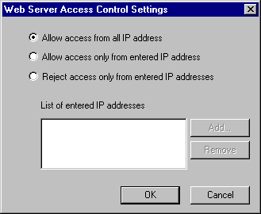
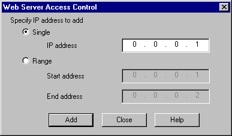

|
|
|
|
|
|
|
|
The Access Control settings enable you to limit access to a target machine based on a remote PC's IP address. You can also set up password access for Web Gate, see Section 4.8.2.4, Protecting Web Server/Web Gate Connections from Unauthorized Users.
In target properties, expand the Web Server property, and click the ellipsis in the Access Control property.
In the Web Server Access Control Settings window, choose one of the three access options:

Allow access from all IP addresses: Allows access to the target from any remote PC.
Allow access only from entered IP addresses: Allows access to the target from only remote PC's with listed IP addresses.
Reject access only from entered IP addresses: Blocks access to the target from remote PC's with listed IP addresses.
Click Add to register an IP address. You can either add a Single IP address or a Range of IP addresses.

Single: Enter one IP address in the IP address field.
Range: Enter the first and last IP addresses in the fields. All the addresses in between are added too.
Click Add to add the defined IP address to the list.

You can also add IP addresses at runtime from the Runtime Configuration menu. See Section 26.3.7, Changing Web Gate Access.